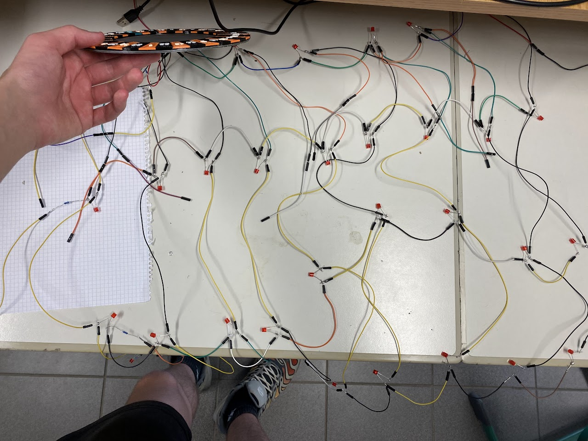
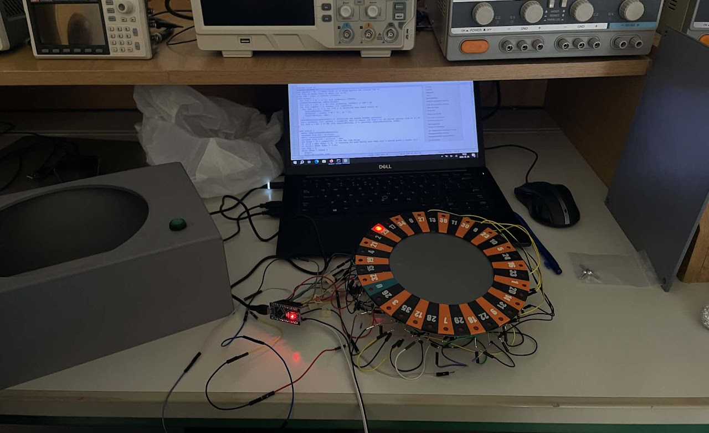

Roulette
A Roulette ismertetése
A rulett egy kaszinójáték, amelyben a játékosok arra fogadnak, hogy egy forgó keréken melyik számra vagy színre esik a golyó. A keréken számozott mezők találhatók (0-tól 36-ig, az európai változatban), amelyek piros vagy fekete színűek, kivéve a nullát, ami zöld.
A játék menete során a krupié megforgatja a kereket, majd az ellenkező irányba elgurítja a golyót.
Amikor a golyó megáll, az a mező nyer, amelyikbe beleesik.
Implementáció
A projektben a golyó ki lett helyettesítve LED-ekkel amik a hozzá tartozó számok előtt helyezkednek el.
Így a "pörgetés" során nem a golyó gurul körbe, hanem a ledek kör-körös sorban villannak fel a golyót imitálva.
A kód olyan módon lett megírva hogy a pögetések kijövetel teljesen véleltlenszerű legyen.
Részei
- 1db Arduino NANO
- 37db LED
- 1db Gomb
- 1db Buzzer
- 4db 330ohm-os ellenállás
Működtetése:
Bekapcsolásnál rövid ideig négy LED felvillan és forogni kezdenek a rouletten, ezzel jelezve a bekapcsolását a projektnek.
A forgatás elinditásához meg kell nyomni a gombot, aztán a játék elindul.
(A forgatás során felkapocsolodó LED-ek mellé a buzzer is ad ki egy hangot, a golyó hangját imitálva)
Képek és Videók

